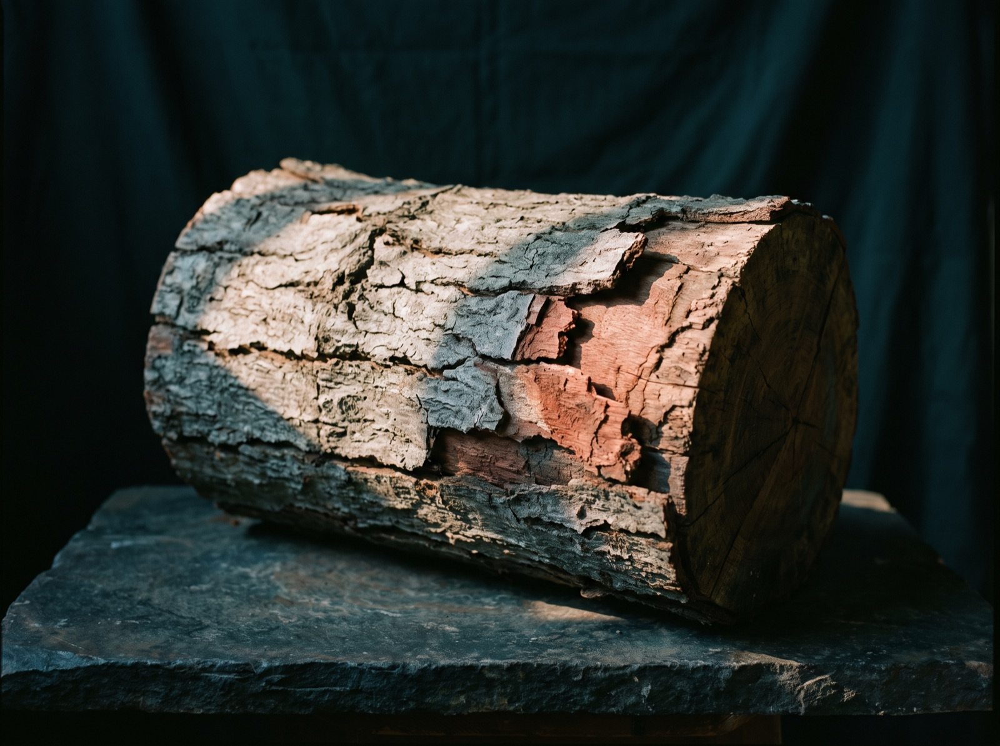
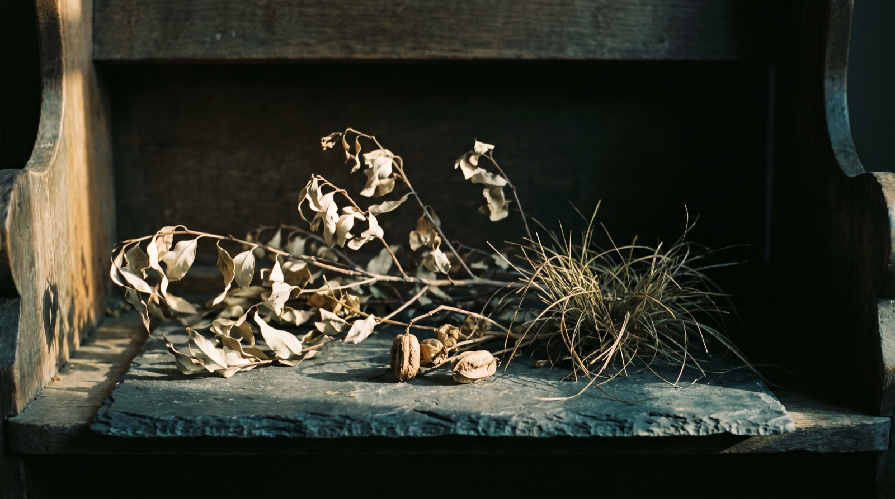
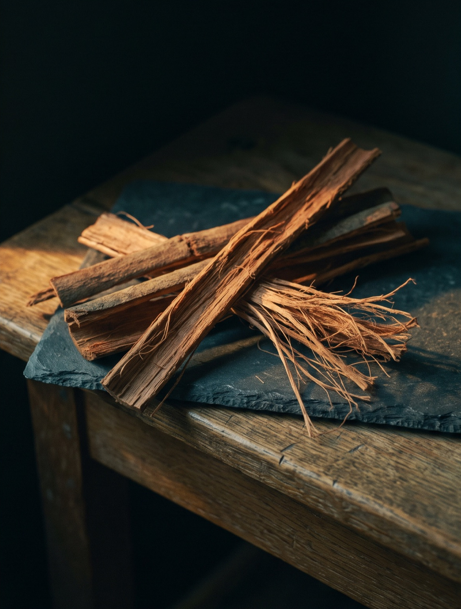
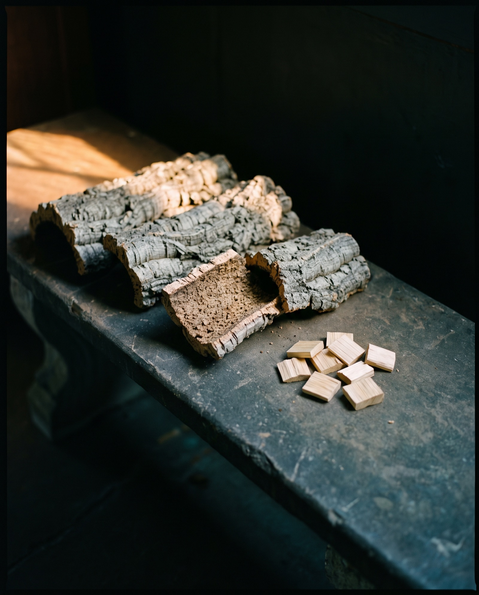
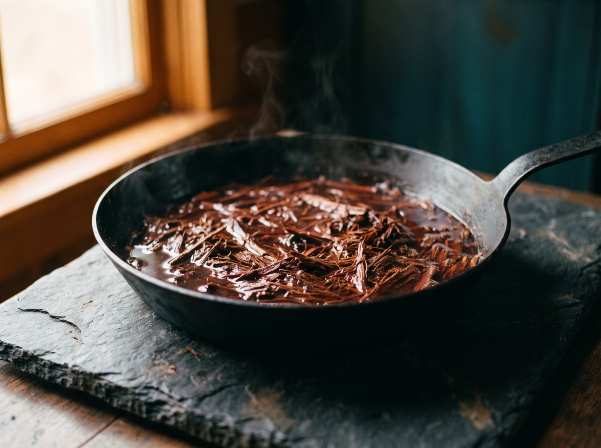
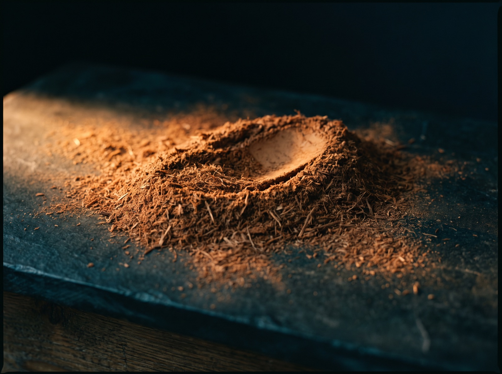

Pau d'arco · Ingredient notes
Pau d'arco. The inner bark is the whole point.
A South American tree, four common names, three botanical ones, and a bag of tea that is usually mostly the wrong part of the trunk. This is how we tell inner bark from outer bark across the counter, and what we are and are not allowed to tell you about either.
By Reiss Davies Ausar8 September 202610 minute read

A customer came in last Thursday with a kilo bag of pau d'arco tea under her arm and asked me why it tasted of nothing. She had bought it cheap online, drunk it every day for a fortnight, and spent that fortnight quietly wondering what the fuss was supposed to be about. I tipped a good handful of it out on the counter so the two of us could stand over it and look properly.
Most of what came out of that bag was grey. Hard curved pieces like broken roof tiles, corky, cracked across one face. Mixed through them were blond squarish chips, the sort of thing that comes out of a hamster cage. Down in the bottom third of the bag was a handful of long reddish brown fibrous strips that you could pull apart with your fingers, and that handful was the pau d'arco. The rest of it was the outside of the tree and the wood sat underneath.
This is the commonest problem with this herb by a distance, and it is not a subtle one once somebody has shown it to you. Pau d'arco is not bark, it is inner bark, and once you innerstand what that means you can sort a good bag from a bad one in about four seconds with your hands. So most of this article is about the inside of a trunk rather than about the tree, which is less romantic and decides whether you have bought anything at all.
01The tree
Pau d'arco comes from Tabebuia impetiginosa, a large deciduous tree of the family Bignoniaceae, which is the trumpet-creeper family and also gives us jacaranda and catalpa. The flowers are long tubes flaring out into five lobes, carried in heads at the ends of the twigs.
It grows across a broad band of South America: Brazil, Paraguay, northern Argentina and on into Bolivia. Its country is seasonally dry rather than true rainforest, the cerrado and the drier woodland at the edges of the chaco, where the whole year splits cleanly into wet and dry and everything growing there has arranged itself around that split. It is a big canopy tree, planted along streets and round plazas for what it does at the end of the dry season.
It drops every leaf it has and then flowers on bare wood. The crown turns magenta for a week or two, so completely that from a distance the tree reads as a pink cloud sat on a grey trunk. The Portuguese name for that colour form is ipê roxo, purple ipê. A tree that empties itself before it flowers is worth marinading on for a minute.

The name pau d'arco is Portuguese for bow stick, and it describes the timber rather than the bark, which tells you what people wanted off this tree first. The wood is one of the densest in commerce, heavy enough that a block of it sinks in water. Sold as ipe, it is the decking timber under boardwalks and terraces all over Europe, and there is a fair chance you have walked on this plant without ever meeting it.
That matters for supply, and it is the part nobody writes about. Nobody grows this tree in plantations for its bark, so everything in the trade is wild-harvested, taken off trees felled for timber or stripped standing in the forest. A tree stripped in a ring right round the trunk does not survive the stripping. Bark taken in strips down one face, by somebody who fully intends to walk back to that same tree in three years, is a different proposition altogether. Almost nothing reaching this country tells you which of the two is in your bag.
The bark is on the outside of a very valuable log. Nobody plants this tree for the bark.

02Inner bark, outer bark, and the bag on the counter
A trunk is built in layers, and every layer is doing a different job for the others. Outside is the outer bark, the dead corky armour that cracks and flakes as the tree expands underneath it. Under that sits the inner bark, a thin living layer carrying sugars up and down the whole height of the tree. Then a film of cambium, then the wood: sapwood first, pale and wet, then heartwood. Everything works in community, so to separate life from life only reduces its functionality, and the layer you are buying only ever made sense as part of a trunk. Pau d'arco is the second of those layers and nothing else.
The inner bark is a strong reddish brown, somewhere between cinnamon and old brick, sometimes with a purplish cast on the inner face. It is fibrous the whole length of it, so a strip does not snap. Pull at it and it shreds, splitting into long stringy threads along the grain, the way a stick of celery does. It bends a long way before it tears. Chew a shred of it and it is bitter and drying, and that bitterness parks itself at the back of the tongue and stays a while.
Outer bark does the opposite of all that. Grey to grey-brown on the weathered face, thick, light for its size, and it snaps with a dry click instead of shredding. The break is granular rather than stringy, and it tastes of very little. Sapwood is easier still: blond, near white, cut into hard square chips, tasteless.


The reason a cheap bag gets padded is arithmetic, not wickedness. The inner bark is a thin skin on a very big trunk, and separating it out takes a person with a knife working slowly down the length of a log. Outer bark and sapwood come off that same tree in far greater quantity, cost the harvester nothing and mill beautifully. Cut material hides the difference well and powder hides it completely, which is exactly why the bad bags are sold as tea cut or fine powder and never as strips.
Milled properly, the powder is a warm reddish brown with fibre still visible through it, and it is light in the hand. Tip a spoonful into hot water and it stains quickly, running brownish red, the fibre staying up in suspension rather than going anywhere. A padded powder is pale fawn or greyish, heavier than it should be, and it behaves like sawdust: it rafts on the top or it drops straight to the bottom. Water tells you the truth about most things.
03Four names, and why the Latin keeps changing
This herb carries more aliases than anything else on our shelf, and every one of them causes trouble.
- Pau d'arco. Portuguese, bow stick, from Brazil. The name that stuck in the English trade.
- Lapacho. Spanish, from Argentina and Paraguay, where the bark tea is domestic rather than a health-shop item.
- Ipê roxo. Portuguese, purple ipê, after the flowers. Ipê is the name for the whole group of trees.
- Taheebo. A trade name out of Brazil that travelled through North America. Mostly seen on older packaging.
Then there is the Latin, where one shelf will happily carry three binomials at once. Tabebuia impetiginosa, Tabebuia avellanedae and Handroanthus impetiginosus are, to every practical purpose, the same tree. Here is why there are three of them.
Tabebuia used to be an enormous catch-all genus holding somewhere around a hundred species of American trumpet trees. When botanists went back over it with wood anatomy and DNA sequencing in the 2000s the whole genus came apart in their hands, and the hard-wooded ipês were moved into Handroanthus, a name that had been published decades earlier and then quietly ignored. So Tabebuia impetiginosa became Handroanthus impetiginosus. Nothing about the tree changed. The filing cabinet changed.
Tabebuia avellanedae ends the same way. It was described from Argentina as its own species in the nineteenth century, and later work concluded it was the same plant, so it is now a synonym. Botanical naming runs on priority: the older valid name wins. Traders keep printing whichever name was current when they wrote their label, and labels get copied from labels.
Three names, one tree, and not three different products, whatever the shelf looks like. The label to worry about is not the one still printing an old name, it is the one giving you no botanical name at all and no plant part either. If a seller has gone to the trouble and the cost of separating out the inner bark, they will be telling you so on the front of the bag. Nobody pays for that work and then keeps it quiet.
04How it is prepared
Traditionally this bark is a decoction, and understand that I am describing a preparation here and not a purpose. In Paraguay and northern Argentina, lapacho is a kitchen tea rather than a health-shop item: the bark goes into a pan of water, comes up to a simmer, sits there a good while, and is strained off and drunk hot.
Simmering rather than steeping is the physics of the material and not somebody being precious about it. Leaves and flowers are thin and soft, so hot water pulls what is soluble straight out of them inside a few minutes. Bark is dense, woody and largely insoluble, and water needs both time and heat to work its way into that fibre at all. Pour boiling water over bark in a mug and you get faintly coloured water and a disappointment. Simmer the same bark in a covered pan and it goes the colour of strong tea with a reddish cast through it, and it tastes of something: bitter, tannic, drying at the sides of the mouth.

The capsule is a different object altogether and I would rather say so plainly than let the two blur into each other. Dried inner bark, milled and weighed, in a vegan shell. No pan, no strained liquor, no taste, and the quantity is fixed instead of depending on how heavy-handed you were with the bark tin that morning. You gain a measured amount you can carry in a coat pocket and you lose the drink, which is a real loss and I am not going to pretend otherwise. We sell the capsule because most people will not stand over a pan every day, and a thing nobody does is not a protocol.

05What I am allowed to say about it
Nothing. That is the honest answer, and it is worth setting out properly, because you are about to go and read a hundred pages that say otherwise.
We run a food business in England. The only health claims we may make are the ones on the Great Britain register, they attach to a named nutrient rather than to a plant, and we have to be able to show the product holds enough of that nutrient to qualify. Every botanical claim in this country sits on a list that has been on hold for years and shows no sign of moving. Pau d'arco is a bark: no measured nutrient figure to print beside it, and therefore no authorised sentence to hang on it. There is no health claim on this page and there is not going to be one.
On top of that sit the Human Medicines Regulations 2012: a product presented as treating or preventing disease is a medicine, and presentation alone is enough. Nobody has to test anything for that to bite. And an Act of Parliament from 1939 makes it a criminal offence to advertise anything as a treatment for one particular disease, prosecuted by Trading Standards rather than argued out with an advertising body.
Pau d'arco attracts some of the most aggressively illegal marketing in the whole category in this country. Not borderline, not over-enthusiastic, not a clumsy sentence somebody would take down if you asked. Pages that fail all three tests above, written by people selling the same bark we sell, in the same year, to the same customers. I am not going to repeat one line of it, because repeating a claim in order to disown it is still publishing the claim. And I have written sentences about this bark myself that I would not print today, which is a large part of why this site exists at all.
What I can tell you is what the thing is. The inner bark of a South American tree, wild-harvested, milled and put into a vegan capsule with nothing else in the shell. I can tell you how to check you have got the right part of that tree, how it is prepared in the country where it grows, what it costs and who should leave it well alone. That is my half of the conversation and I will do it thoroughly. What it does, if anything, is yours.
06How it is taken
The listing prints the dose as two capsules daily, with food. That is what you would get told across the counter, and I would not go past it.
Take them with a meal rather than on an empty stomach. This is a bitter, tannic bark, and bitter tannic things sit better on top of something than on their own. If you are drinking it as a decoction instead, the same rule holds, and I would keep it to a cup rather than a jug.
The pack is inner bark in a vegan capsule. No fillers, no flow agents, nothing added, and nothing standardised either, because it is bark rather than an extract. It is £19.99.
One thing I ask that nobody else seems to bother asking: check what else you are already taking. This bark turns up inside blended formulas as well as on its own, two of ours included, so if you are already on something carrying Tabebuia impetiginosa on its list, read that list properly before you add a second source of the same tree. Doubling up by accident is easy, it is common, and it is entirely avoidable by reading.
07Who should not take it
This section is longer than the same section on most sites. I would rather lose the sale than skip past it.
- Pregnancy. Do not take it. Not in any trimester, not as a capsule and not as a tea. There is no safety data for pregnancy I would stand behind, and where there is no data the answer is no. If you are pregnant, trying for a baby or breastfeeding, leave this alone and ask your midwife or GP before taking any herb.
- Anticoagulant and antiplatelet medication. Warfarin, apixaban, rivaroxaban, clopidogrel, daily aspirin. Speak to your GP or pharmacist first, and take the pack with you. I am not going to invent a mechanism, because I cannot source one I would be comfortable printing. This is a bark with far more unknowns than knowns and those drugs have very little margin in them, so it is a question for whoever manages your prescription.
- Any prescribed medication at all. Same answer, less emphatically. Ask. A pharmacist will not mind being asked.
- Surgery, dental extractions and any procedure with a date on it. Tell the pre-operative team everything you are taking, including this. They will normally ask you to stop supplements before a date they give you, and that instruction comes from them.
- Bleeding disorders, or anyone told to be careful about bruising or bleeding. Not without your consultant saying yes first.
- Children. No. Keep it out of their reach along with everything else in the cupboard.
- Anyone under a specialist for anything ongoing. Put it on the list you take to your appointment. Herbs belong on that list.
Beyond the list: do not exceed the printed dose, do not decide that if two is the dose then four must be twice as good, and if a bitter bark does not agree with you, stop taking it. That last one sounds obvious written down and it is the instruction people ignore most.
None of this is medical advice and I am not qualified to give any. It is the set of questions I ask before this pack goes into anybody's bag, and you have just been asked all of them.
08Where to get it
Mine is inner bark of Tabebuia impetiginosa, wild-harvested and encapsulated with nothing else in it, at £19.99 a pack.
If you have a bag at home you are unsure about, bring it into the shop on Smithdown Road and we will tip it out on the counter together and stand over it. It takes a minute and it costs nothing, and you will never need me to do it for you again.

Reiss Davies Ausar
Founder and formulator at Herbase. Trading online since 2019 and behind the counter at 599 Smithdown Road, Liverpool, since August 2024. Author of three books on herbal practice. Book an hour with him if you want to go into more detail.